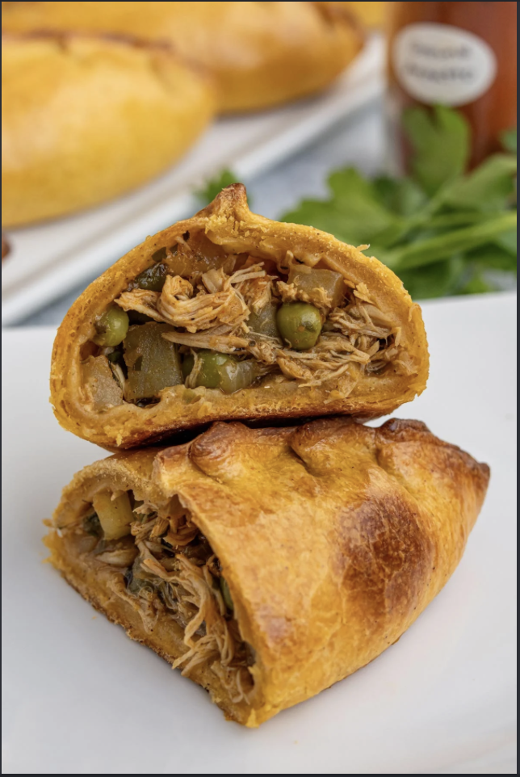

The name of my favorite family recipe is salteñas they are like empanadas but way better, instead of cheese they have meat or chicken depending on which type you pick. Other than meat and chicken they also have potatoes, eggs, green peas, olives and raisins.
| Ingredients | Mesurments |
|---|---|
| Potatoes | 1/3 potato in small cubes |
| Eggs | 1/3 of an egg for each |
| Green peas | 1 tbsp |
| Olives | 1 each |
| Rasins | 1 each |
| Chicken/Meat | 1 handful |
I chose this recpie because it reminds me of my family back in Bolivia more specificaly my grandparents who owned a restaurant that served these all day long even if it wasn't breakfast. My mom would tell me that you couldnt walk a block without seeing a food stand selling salteñas. In Bolivia salteñas where 5 bolivianos which is half a dollar in the US, but here they sell them for 4 dollars each which is really expensive.